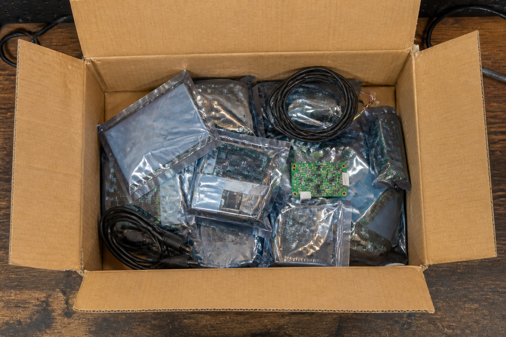

Ta mission : choisir, dans un carton trop fourni, les constituants qu'impose le cahier des charges de la commission, monter le prototype sur l'établi, et prouver qu'aucun de tes choix n'est décoratif.
| Code | Formulation officielle (programme 2024) | Où, dans cette séquence |
|---|---|---|
| 3e_C7.5 | Choisir les constituants et assembler un prototype. | Séance 2 : activité 1 · séance 3 : activités 2 et 3 · séance 4 : activité 4 et REFAIRE |
| 3e_C4.3 (appui) | Décrire un OST en caractérisant sa chaîne d'information. | Séance 1 : activité 0 · séance 4 : synthèse |
Référence normative : programme de technologie du cycle 4, BO n°9 du 29 février 2024. Codification opérationnelle : les codes 3e_C4.3 · 3e_C7.5 servent à ranger les séquences ; ils ne viennent pas du programme officiel.
Pour toi, sans note : coche ce qui est déjà en place. Sous chaque ligne, un lien pour le reprendre si tu n'en es pas sûr·e.
→ pas encore sûr·e ? relis « D'où vient l'énergie qui arrose les bacs ? » dans la synthèse 4e_C4.1 à C4.9
→ pas encore sûr·e ? relis « Pourquoi la carte redémarre-t-elle quand la pompe démarre ? » dans la synthèse 4e_C7.5
→ pas encore sûr·e ? relis « Pourquoi la carte ne fait-elle pas tourner la pompe elle-même ? » dans la synthèse 4e_C7.5
Dans cette séquence : on te donne un catalogue plus large que nécessaire et un cahier des charges à quatre exigences. Choisir un constituant n'a pas de réponse unique : chaque choix ferme et ouvre des portes ailleurs dans le montage. C'est le moment où l'on cesse de répondre à une question pour commencer à concevoir.
Un mot à garder en tête : les exigences se propagent — un choix d'affichage peut décider de la source d'énergie.
La station d'alerte cyclonique du collège existe : le mât est dimensionné, l'énergie est calculée, le programme est écrit et chargé. Le carton du fournisseur contient dix constituants (les pièces qui composeront la station) — plus qu'il n'en faut, parce que le fournisseur ne connaît pas le cahier des charges de votre collège.
La commission de sécurité (les experts qui autorisent l'installation) passe dans quinze jours. Elle a écrit ce qu'elle attend :

Le catalogue contient plus de constituants qu'il n'en faut. Comment un cahier des charges décide-t-il, à lui seul, lesquels on garde ?
On la reprendra au bilan. Personne ne la corrige : elle sert à mesurer le chemin parcouru.
Très basse tension uniquement. Carte, capteurs, bandeau, batterie : tout est en 5 V (volts). Aucun élève ne manipule le secteur, ni pour recharger la batterie, ni pour alimenter l'établi. Le bloc de charge est raccordé par le professeur.
Le bandeau de DEL chauffe. 480 mA (milliampères) à pleine puissance, ce n'est plus une DEL témoin : on ne le tient pas dans la main allumé, et on ne le laisse pas au contact d'un boîtier fermé sans ventilation. C'est aussi pour ça qu'on compte le courant avant de brancher, et pas après.
Le mât reste au sol pendant tout le montage. On ne câble pas en hauteur, et on ne lève rien tant que l'essai n'est pas concluant.
Une question par ligne du bloc « Avant de commencer ». Elles ne sont pas notées et ne comptent pas dans ta progression : elles te disent quoi relire avant de te lancer. « Je ne sais pas encore » est une réponse utile.
Durée : 55 minutes · la situation, ton idée de départ, puis l'activité 0.
La question de la séance : chacune des quatre exigences de la commission, quel constituant impose-t-elle ?
C'est le cahier des charges de la commission qui choisit les constituants, pas le catalogue. Avant de le traduire, cinq minutes pour retrouver ce que dit chaque case d'une ligne, sur deux de ses exigences.
Ce que dit un cahier des charges, en trois mots : pour chaque fonction, un critère, un niveau et une flexibilité. Les mots de référence :
🐙 La leçon complète, avec un cahier des charges entier à compléter : l'atelier de 4e « Le diagramme des interacteurs extérieurs », exercice 6, « Le cahier des charges : critère, niveau, flexibilité », et son cours.
Complète ces deux lignes du cahier des charges de la station, directement dans le tableau : chaque case à menu attend une réponse.
✅ Tu as réussi si… les 9 cases justes, et tu sais dire pourquoi chaque piège ne va pas.
Remplis le tableau colonne par colonne. Pour chaque case, relis la définition du mot, juste au-dessus, dans « Les mots du cahier des charges ».
📌 À retenir : chaque fonction du cahier des charges (FP ou FC) a une désignation qui commence par un verbe à l'infinitif, un critère (ce qu'on mesure), un niveau (un nombre et son unité) et une flexibilité (l'écart que le client accepte, de F0 impératif à F3 très négociable).
⚠ Le piège classique : prendre le niveau (« au moins… ») pour le critère, écrire un niveau sans unité, ou choisir la flexibilité d'après l'importance de la fonction au lieu de l'écart que le client accepte.
Un cahier des charges ne dit pas quels constituants acheter : il dit ce que l'objet doit faire. Le passage de l'un à l'autre est le travail du concepteur, et il se fait exigence par exigence.
Associe chaque exigence de la commission au constituant qu'elle impose.
Exigence 1 — déclencher au-delà de 90 km/h de vent — elle impose l'anémomètre : c'est la seule grandeur du cahier des charges
Exigence 2 — une alerte visible depuis la cour en plein jour — elle impose le bandeau de DEL : un écran de 16 caractères ne se lit pas à 30 mètres
Exigence 3 — tenir 72 heures sans intervention — elle impose la batterie et le panneau : l'USB suppose un ordinateur allumé en permanence
Exigence 4 — un historique consultable après l'événement — elle impose la carte SD : sans elle, la station alerte mais ne prouve rien
Les quatre fonctions décrivent ce qui fait fonctionner un objet, pas tout ce qu'un cahier des charges peut demander. La carte SD n'est ni un capteur, ni un processeur, ni un actionneur, ni une source — et sans elle, l'exigence 4 n'est pas tenue. Le Base Shield est dans le même cas : indispensable, hors des quatre.
Il n'y a pas de cinquième fonction à ajouter à la liste : la liste décrit la chaîne, et un objet technique réel porte des constituants qui ne sont pas dans la chaîne — fixation, protection, mémoire, connectique.
Durée : 55 minutes · activité 1.
La question de la séance : deux constituants qui fonctionnent parfaitement peuvent-ils quand même rester dans le carton ?
Le catalogue propose dix constituants. Le cahier des charges en impose une partie et en exclut une autre. Choisis, puis justifie — et la justification compte autant que le choix : un choix juste qu'on ne sait pas défendre ne tient pas devant une commission.
La justification. Écris, en quelques lignes : pourquoi le capteur de pluie ne peut pas remplacer l'anémomètre, et pourquoi l'écran LCD ne peut pas remplacer le bandeau. Ces deux-là fonctionnent parfaitement — ce n'est pas leur qualité qui est en cause.
Le niveau attendu est le même : ces phrases donnent le départ, pas la réponse.
Pour mesurer la grandeur du seuil, je retiens… — l'anémomètre
Pour rendre l'alerte visible depuis la cour, je retiens… — le bandeau de 8 DEL
Pour garder l'historique, je retiens… — le module carte SD
Pour alimenter la station sur son mât, je retiens… — la batterie et le panneau solaire
Le capteur de pluie mesure une grandeur réelle et le fait bien. Mais le seuil du cahier des charges porte sur le vent, en km/h. Un cyclone s'accompagne de pluie, donc la corrélation existe — et une corrélation n'est pas une mesure : on ne déclenche pas une alerte à 90 km/h avec un capteur qui répond « mouillé ».
L'écran LCD affiche la valeur exacte, avec son unité, et coûte 20 mA (milliampères) contre 480. Il est meilleur sur tous les critères sauf un : il se lit à trente centimètres. L'exigence ne dit pas « afficher », elle dit « visible depuis la cour, en plein jour ». Une exigence d'usage se juge depuis l'endroit où l'on est, pas depuis la fiche technique.
Les deux constituants écartés ne sont pas mauvais. Ils répondent à un autre besoin que celui-ci — c'est tout ce que « choisir » veut dire.
Durée : 55 minutes · activités 2 et 3.
La question de la séance : le montage choisi fonctionne-t-il, et que perd la station quand on lui retire un constituant ?
⚡ Avant de câbler : relis l'encadré Sécurité — très basse tension uniquement, le bandeau de DEL chauffe, et le mât reste au sol.
Monte ta station sur l'établi. Le programme sous le tableau te dit où il lit et où il écrit. L'établi refusera tant qu'une exigence n'est pas tenue — et il te dira laquelle, pas « erreur ».
🔧 L'établi de l'activité 2 — le même, avec ton montage
L'établi : le catalogue contient plus de constituants qu'il n'en faut. Choisis, monte, teste — et lis ce que le refus t'apprend sur ton choix.
| Constituant | Ce qu'il fait | mA | Port |
|---|---|---|---|
| Carte Arduino UNO | elle exécute le programme | — | |
| Base Shield V2 | il donne des ports Grove à la carte | — | |
| Anémomètre Grove | il mesure la vitesse du vent | — | |
| Capteur de pluie Grove | il détecte la présence de pluie | — | |
| Écran LCD I2C Grove (16 × 2) | il affiche la mesure, lisible à 30 cm | — | |
| Bandeau de 8 DEL de puissance | il signale l'alerte, visible de la cour | — | |
| Buzzer Grove | il émet un son d'alerte | — | |
| Module carte SD Grove | il enregistre les mesures et leur heure | — | |
| Câble USB 5 V (volts), 500 mA (milliampères) | il alimente depuis un ordinateur | — | |
| Batterie 5 V / 2 A (ampères) + panneau solaire (TBT) | elle alimente la station sur site | — |
—
Le programme téléversé dans la carte (on ne le modifie pas) :
Les cinq premières encoches relisent ton établi. La sixième est une question.
🔒 Fais d'abord accepter ton prototype par l'établi : on ne commente pas un montage qu'on n'a pas fait fonctionner.
L'anémomètre sur A0, le bandeau sur D6, la carte SD sur UART, la batterie sur ALIM EXT, la carte et le shield sur le socle.
D6, parce que le programme l'écrit. Aucun port numérique n'est meilleur qu'un
autre pour piloter un bandeau, et aucun ne « supporte » 480 mA — le courant du bandeau ne
passe pas par le port de données, il vient de l'alimentation. Le seul argument valable est
celui-là : digitalWrite(6, …) est écrit dans un programme qu'on ne modifie
pas dans cette séquence.
Modifier le programme pour qu'il écrive ailleurs serait un choix légitime — c'est le travail de la compétence C6.2, et il faut alors le tester.
Ta station fonctionne. Retire un constituant, re-teste, lis le refus, puis remets-le. Quatre retraits, quatre refus différents — et c'est cette différence qui prouve qu'aucun de tes choix n'était décoratif.
↑ Remonte à l'établi — c'est le même, et il a gardé ton montage. Une page ne porte qu'un seul établi : deux exemplaires, ce seraient deux instruments qui répondent au même nom.
Associe chaque retrait au refus que l'établi t'a opposé.
🔒 Fais d'abord fonctionner la station, puis retire un constituant et re-teste : c'est le retrait qui montre ce que le choix apportait.
On retire l'anémomètre — la station ne peut plus mesurer la grandeur sur laquelle porte le seuil
On retire le bandeau de DEL — l'alerte existe dans la carte, et personne dans la cour ne la voit
On retire le module carte SD — la station alerte correctement, et ne peut rien prouver après l'événement
On retire la batterie — il ne reste que l'USB : 580 mA demandés, 500 disponibles, la carte redémarre
Remarque la nature des quatre refus : le premier porte sur une grandeur, le deuxième sur un usage, le troisième sur une preuve, le quatrième sur une quantité d'énergie. Un cahier des charges à quatre exigences produit quatre refus de quatre natures. C'est ce qui fait qu'on ne peut pas « à peu près » équiper une station.
Durée : 55 minutes · activité 4 et REFAIRE, puis le bilan de la séquence.
La question de la séance : le seul afficheur qui tienne l'exigence 2 a-t-il créé un problème ailleurs dans le montage ?
⚡ Avant de démonter et de re-tester : relis l'encadré Sécurité — très basse tension uniquement, le bandeau de DEL chauffe, et le mât reste au sol.
L'établi de l'activité 2 te suit, avec ton montage. S'il est vide (autre ordinateur, sauvegarde effacée), remonte d'abord la station complète : la correction de l'activité 2 donne le port de chaque constituant.
Le bandeau est le seul afficheur qui tienne l'exigence 2. Il est aussi celui qui coûte vingt-quatre fois le courant de l'écran LCD. Le bon choix a créé le problème suivant — et c'est normal : c'est ce qu'est une conception.
Retire la batterie de ton montage complet, re-teste, et lis les nombres.
↑ Remonte à l'établi — c'est le même, et il a gardé ton montage. Une page ne porte qu'un seul établi : deux exemplaires, ce seraient deux instruments qui répondent au même nom.
| Configuration testée | Courant demandé, en mA |
|---|---|
| Carte + anémomètre + écran LCD + carte SD | |
| Carte + anémomètre + bandeau de DEL + carte SD | |
| Ce que fournit le câble USB |
🔒 Retire la batterie de ton montage complet et re-teste : l'établi te donnera le nombre exact qu'on te demande ici.
| Configuration testée | Courant demandé, en milliampères (mA) |
|---|---|
| Carte + anémomètre + écran LCD + carte SD | 120,0 mA |
| Carte + anémomètre + bandeau de DEL + carte SD | 580,0 mA |
| Ce que fournit le câble USB | 500,0 mA |
Suis la chaîne : la commission veut une alerte visible depuis la cour → le seul afficheur qui tienne est le bandeau → le bandeau demande 480 mA (milliampères) → le montage passe à 580 mA → l'USB, qui en donne 500, ne suffit plus → il faut la batterie et le panneau. Une exigence d'usage, écrite par quelqu'un qui ne connaît rien à l'électronique, a décidé de la source d'énergie de la station.
C'est le mouvement propre à la conception : les exigences ne s'additionnent pas côte à côte, elles se propagent. Et l'exigence 3 — tenir 72 heures — devient soudain beaucoup plus difficile à tenir qu'avec un écran LCD. Tu as calculé ce genre d'autonomie en 3e_C7.4 : 580 mA sous 5 V (volts), c'est près de 3 W (watts), et 72 heures à ce régime dépassent de loin ce qu'un petit panneau recharge en Martinique.
Ce que ce prototype ne résout pas : le bandeau ne peut pas rester allumé en permanence. La vraie station ne l'allume qu'au-dessus du seuil, et c'est le programme qui s'en charge. Un prototype d'établi montre que le montage tient ; il ne montre pas qu'il tient trois jours.
La commission ajoute une cinquième exigence : « l'alerte doit aussi être perceptible par une personne malvoyante présente dans la cour ».
Écris : quel constituant du catalogue tu ajoutes, sur quel type de port, ce que devient le courant total, et surtout — quelle exigence déjà tenue cet ajout vient fragiliser.
Le niveau attendu est le même : ces phrases donnent le départ, pas la réponse.
Le buzzer, sur un port numérique libre (D2, D3, D5…), 30 mA (milliampères). Il tient la fonction « agir », comme le bandeau : deux constituants pour une même fonction, deux canaux de perception différents. C'est la définition même d'une alerte accessible — on ne remplace pas le visuel, on l'ajoute.
Courant total : 45 + 15 + 480 + 40 + 30 = 610 mA. Toujours sous les 2000 mA de la batterie : le montage passe.
L'exigence fragilisée est la troisième : tenir 72 heures. On vient d'ajouter 30 mA permanents à un budget déjà tendu par le bandeau. La bonne réponse n'est pas « ça passe » mais « ça passe, et il faut refaire le calcul d'autonomie ».
Une exigence d'accessibilité n'est jamais « en plus » : elle entre dans le même budget que les autres, et c'est précisément pour ça qu'on l'écrit dans le cahier des charges au début, et pas à la fin.
Le collège voisin a le même carton et un cahier des charges différent : sa station doit prévenir le personnel de vie scolaire à l'intérieur du bâtiment, sans qu'aucune alerte ne soit visible dans la cour — pour ne pas affoler les élèves.
Sur l'établi, monte la station de ce collège-là. Puis écris ce que tu observes : combien de constituants changent, et de combien le budget de courant baisse. Un même carton, deux cahiers des charges, deux stations — voilà pourquoi le fournisseur ne peut pas choisir à votre place.
Le niveau attendu est le même : ces phrases donnent le départ, pas la réponse.
Ce qui ne change pas. Les exigences 1, 3 et 4 restent : l'anémomètre (déclencher au-delà de 90 km/h), la batterie et son panneau (72 heures sans intervention : l'USB supposerait un ordinateur allumé en permanence), la carte SD (l'historique). Seule l'exigence 2 change : prévenir la vie scolaire à l'intérieur, sans rien montrer dans la cour.
Un seul constituant change. Le bandeau de DEL, fait pour se voir depuis toute la cour, retourne dans le carton. À sa place, l'écran LCD, posé dans le bureau de la vie scolaire : il se lit à trente centimètres, et c'est justement ce qu'on veut. Il se branche sur un port I2C au lieu de D6.
Le budget de courant. L'établi affiche 580 mA (milliampères) pour ta station et 120 mA pour celle-là : 580 − 120 = 460 mA de moins, les 480 mA du bandeau remplacés par les 20 mA de l'écran. Presque cinq fois moins de courant : sous 5 V (volts), 0,6 W (watts) au lieu de 2,9 W, et tenir 72 heures devient bien plus facile.
Ce que dit l'établi. Il refuse ce montage : « l'alerte n'est pas visible depuis la cour ». C'est normal, il juge avec le cahier des charges de ton collège. Le même carton, deux cahiers des charges, deux stations : c'est le cahier des charges qui choisit. Et le programme devra changer : il écrit sur D6, où il n'y a plus rien.
Variante acceptée : le buzzer dans le bureau à la place de l'écran (130 mA, soit 450 mA de moins), à condition de dire qu'on ne doit pas l'entendre depuis la cour — sinon il affolerait les élèves autant qu'un bandeau.
Attendus : le nombre de constituants qui changent (un : le bandeau remplacé par l'écran LCD) ; les deux budgets lus à l'établi (580 et 120 mA) et la baisse (460 mA) ; la raison (seule l'exigence 2 a changé).
Erreurs typiques : retirer aussi la batterie « puisque l'USB suffit maintenant » — l'exigence 3 n'a pas changé ; garder le bandeau en pensant l'éteindre ; croire que l'établi se trompe quand il refuse.
🔙 Ton idée de départ : —
Compare : ton point de départ était-il le catalogue, ou le cahier des charges ?
Le niveau attendu est le même : ces phrases donnent le départ, pas la réponse.
Comment j'ai travaillé :
Le niveau attendu est le même : ces phrases donnent le départ, pas la réponse.
Les quatre niveaux sont ceux du livret scolaire :
maîtrise insuffisante · maîtrise fragile · maîtrise satisfaisante · très bonne maîtrise.
Aucun n'est une note : choisis celui qui décrit ce que tu fais aujourd'hui.
30 questions sur le choix des constituants, les exigences qui se propagent et le budget de courant. 20 portent sur l'assemblage et le choix, 10 sur la chaîne d'information que tu sais déjà caractériser.
🚀 Ouvrir le QCM d'entraînement